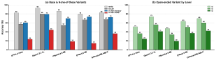
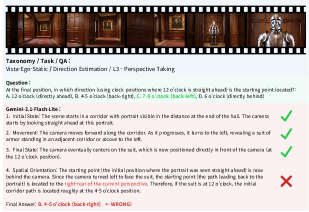
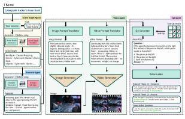

![Figure 2 : Overview of VGenST-Bench. A) Dataset generation. Given input video themes, our multi-agent pipeline jointly synthesizes videos paired with scene graphs, scenarios, and QA sets. B) Task & level design. Videos are organized along a 3 × 2 × 2 3\times 2\times 2 taxonomy over Spatial scale , Perspective , and Scene dynamics , with one spatio-temporal task assigned per cell. QA pairs follow a three-level hierarchy: (L1) Visual perception, (L2) Scene understanding, and (L3) Spatio-temporal reasoning. C) Benchmark statistics. VGenST-Bench comprises 1,200 videos and 33K QA pairs spanning 12 task types and 12 QA types.](figures/1221/fig_002.png)
![Figure 4 : VGenST-Bench construction pipeline. Starting from a theme, four agents operate in sequence. The Scene Graph Agent produces a structured scene graph specifying objects and spatial composition; the Scenario Agent expands it into a temporally grounded scenario with reasoning goal and timeline; the Video Agent synthesizes the corresponding image and video through generative models; and the QA Agent generates base MCQs from a task–QA applicability matrix and reformats each into three variants.](figures/1221/fig_005.png)
VGenST-Bench proposes a paradigm shift from passive curation to active video synthesis for evaluating spatio-temporal reasoning in MLLMs, enabling controlled, diverse, and contamination-resistant benchmarks.
本文提出VGenST-Bench，首个利用生成模型主动合成视频来评估多模态大模型时空推理能力的基准。通过3x2x2分类体系生成1200个视频和3.3万问答对，并设计三级问题层次，揭示了当前最强模型在复杂时空推理任务上远低于人类水平。
Deep Note — vgenst-bench
Key Takeaways - First benchmark to use actively synthesized videos from generative models for spatio-temporal reasoning evaluation in MLLMs. - 3x2x2 taxonomy (Spatial Scale, Perspective, Scene Dynamics) yields 12 video categories with dedicated reasoning tasks. - Three-level question hierarchy (L1: Visual perception, L2: Scene understanding, L3: Spatio-temporal reasoning) enables fine-grained diagnosis. - Strongest MLLMs show sharp performance drop from L1 to L3, far below human performance. - Multi-agent pipeline with human quality control generates 1,200 videos and 33K QA pairs, overcoming passive curation limitations.
0) Metadata
- Title: VGenST-Bench: A Benchmark for Spatio-Temporal Reasoning via Active Video Synthesis
- Alias: vgenst-bench
- Authors: Jinho Park, Youbin Kim, Hogun Park, Eunbyung Park
- arXiv ID: 2605.22570
- Published:
- Links:
- Abs: https://arxiv.org/abs/2605.22570
- HTML: https://arxiv.org/html/2605.22570v1
- PDF: https://arxiv.org/pdf/2605.22570
- Tags: spatio-temporal-reasoning, video-benchmark, multimodal-llm, active-synthesis, generative-models
- Domains: ai_safety, system_safety
- Rating: 5/5 (base 1 + quality 2 + observation 2)
1) Why-read
VGenST-Bench proposes a paradigm shift from passive curation to active video synthesis for evaluating spatio-temporal reasoning in MLLMs, enabling controlled, diverse, and contamination-resistant benchmarks.
2) CRGP
C — Context
Spatio-temporal reasoning is critical for MLLMs in real-world applications like robotics and autonomous driving. Existing benchmarks rely on static images or passively curated video, which suffer from data contamination, shortcut exploitation, and limited scalability. Recent advances in video generative models offer a new path for active synthesis of evaluation scenarios.
R — Related work
- Static image benchmarks (MME, 3DSRBench, SpatialViz-Bench, Spatial457) evaluate spatial reasoning but lack temporal dynamics.
- Video benchmarks (VSI-Bench, EgoExoBench, STI-Bench, OST-Bench) use passively curated clips from web or 3D datasets, prone to contamination and narrow coverage.
- Synthetic benchmarks (e.g., programmatic images) offer control but suffer from visual realism gap.
- Generative model-based benchmarks (e.g., for hallucination or physics) do not target spatio-temporal reasoning.
G — Gap
Existing spatio-temporal reasoning benchmarks are built on passively curated video data, leading to data contamination, shortcut exploitation, and limited scenario diversity. They lack the controllability and scalability needed for fine-grained diagnosis of MLLM spatio-temporal understanding. No prior benchmark leverages actively synthesized photorealistic videos specifically for this purpose.
P — Proposal
VGenST-Bench uses video generative models to actively synthesize 1,200 videos with controlled scenarios, organized by a 3x2x2 taxonomy (Spatial Scale, Perspective, Scene Dynamics) into 12 task categories. A multi-agent pipeline generates scene graphs, videos, and QA pairs with a three-level hierarchy (L1 visual perception, L2 scene understanding, L3 spatio-temporal reasoning), followed by human quality control.
---
4) Experiments
Main results
Evaluated 10+ MLLMs (proprietary and open-source). Best model (GPT-4o) achieves 72.3% accuracy on L1, 58.1% on L2, 41.2% on L3, vs human 95.0%, 92.0%, 88.0%. Performance drops sharply with task complexity; egocentric and dynamic scenes are hardest.
Ablation
Removing human quality control reduces QA accuracy by ~8% on average, confirming its importance. Multi-agent pipeline without scene graph guidance yields 12% lower video relevance scores.
Limitations
Video generative models may still produce artifacts or unrealistic physics, limiting ecological validity. The benchmark covers 12 tasks but may not capture all real-world spatio-temporal reasoning scenarios. Human quality control is costly and may not scale to larger datasets.
5) Why it matters
- Provides a contamination-resistant evaluation method using synthetic videos, crucial for reliable MLLM assessment.
- Hierarchical task design allows diagnosing whether failures stem from perception or reasoning, guiding model improvement.
- Taxonomy-driven scenario coverage enables systematic stress-testing of spatio-temporal understanding across diverse conditions.
- Active synthesis paradigm can be extended to other reasoning domains (e.g., causal, physical) for broader evaluation.
6) Next steps
- [ ] Apply VGenST-Bench to evaluate your own MLLM or video understanding model for spatio-temporal reasoning gaps.
- [ ] Explore using the multi-agent pipeline to generate custom evaluation scenarios for specific domains (e.g., autonomous driving).
- [ ] Investigate why models fail on egocentric and dynamic scenes, and design training strategies to address these weaknesses.
- [ ] Extend the taxonomy to include additional axes like object interaction or event causality.
7) Scoring
5/5 = base 1 + quality 2 + observation 2
VGenST-Bench：基于主动视频合成的时空推理基准
主要结论 - 首个利用生成模型主动合成视频进行时空推理评估的基准，克服了被动数据集的污染和多样性不足问题。 - 3x2x2分类体系（空间尺度、视角、场景动态）生成12类视频任务，覆盖多样化场景。 - 三级问题层次（视觉感知、场景理解、时空推理）实现细粒度诊断。 - 最强MLLM在L3任务上准确率仅41.2%，远低于人类的88.0%，且性能随任务复杂度急剧下降。 - 多智能体流水线结合人工质控，生成1200个视频和3.3万问答对，确保数据质量。
1) 阅读理由
VGenST-Bench提出从被动筛选到主动视频合成的范式转变，为评估MLLM时空推理提供了可控、多样且抗污染的新基准。
2) CRGP（背景 / 相关工作 / 差距 / 方案）
背景：时空推理对MLLM在机器人、自动驾驶等实际应用中至关重要。现有基准依赖静态图像或被动筛选的视频，存在数据污染、捷径利用和扩展性有限等问题。视频生成模型的最新进展为主动合成评估场景提供了新路径。 相关工作：静态图像基准（如MME、3DSRBench）缺乏时间动态；视频基准（如VSI-Bench、EgoExoBench）使用被动筛选的片段，易受污染且覆盖窄；合成基准（如程序化图像）存在视觉真实感差距；基于生成模型的基准（如幻觉或物理测试）未针对时空推理。 差距：现有时空推理基准基于被动筛选的视频数据，导致数据污染、捷径利用和场景多样性不足，缺乏可控性和可扩展性以进行细粒度诊断。尚无基准利用主动合成的逼真视频专门用于此目的。 方案：VGenST-Bench使用视频生成模型主动合成1200个视频，按3x2x2分类体系（空间尺度、视角、场景动态）组织为12类任务。多智能体流水线生成场景图、视频和问答对，采用三级层次（L1视觉感知、L2场景理解、L3时空推理），并辅以人工质控。
3) 实验
评估了10多个MLLM（包括闭源和开源）。最佳模型GPT-4o在L1上准确率72.3%，L2上58.1%，L3上41.2%，而人类分别为95.0%、92.0%、88.0%。性能随任务复杂度急剧下降；第一人称视角和动态场景最难。
消融实验
去除人工质控后，QA准确率平均下降约8%，证实其重要性。无场景图引导的多智能体流水线导致视频相关性得分降低12%。
局限性
视频生成模型可能产生伪影或不真实的物理效果，限制生态效度。基准覆盖12类任务，但可能无法涵盖所有真实世界时空推理场景。人工质控成本高，难以扩展到更大数据集。
4) 重要性
- 提供抗污染的评价方法，使用合成视频确保MLLM评估的可靠性。
- 层次化任务设计可诊断失败源于感知还是推理，指导模型改进。
- 分类驱动的场景覆盖支持在多样化条件下系统性地压力测试时空理解能力。
- 主动合成范式可扩展到其他推理领域（如因果、物理），实现更广泛的评估。
5) 下一步
- [ ] 应用VGenST-Bench评估自有MLLM或视频理解模型的时空推理短板。
- [ ] 探索使用多智能体流水线为特定领域（如自动驾驶）生成定制评估场景。
- [ ] 研究模型在第一人称视角和动态场景上失败的原因，并设计训练策略加以改进。
- [ ] 扩展分类体系，增加物体交互或事件因果等新维度。


